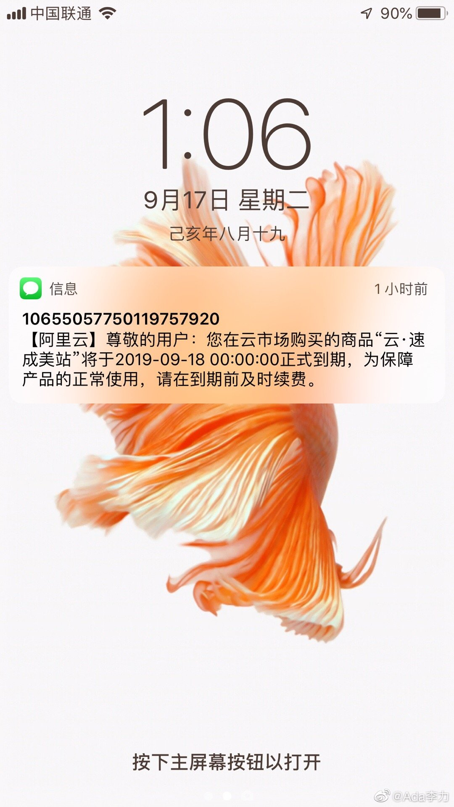

#创业#
去年九月份买了个建站的云服务，除了刚购买之后，我把个后台的各种功能都试用了下，做了几个模板之后就再没管过它，更没用起来，直到最近收到提醒我续费的通知。
记录下来当做一个理论指导不了实践的例子吧。
很早很早之前我就知道精益创业理论，也看过相关的书，也认为自己已经用MVP的方式去验证过一些想法。但是购买这个建站服务的过程，让我发现自己还是存在很多盲点。
一个弊端就是还是追求大而全，当时看中这个建站系统，因为这个CMS系统可以用同一套内容对应不同的屏幕，也就是说既可以用在PC网站，可以用在APP上，也可以用在小程序上。但实际上这三种展现模板对应的是不同的人群和不同的展现逻辑。而且对于一个工具来说，如果样样行，其实是样样松。
另外一个我发现工具是有了，但是最核心的是内容并没有准备好，为什么我还是还是早早地购买了工具呢？因为自己的IT背景让我对摆弄这些工具得心应手，也驾轻就熟。在还没有想明白自己要干什么的情况下，往往会优先选择干自己最容易上手的那块工作，而并不是最重要的事儿。人有路径依赖，这个也是挺明显的证明了。
算是花钱买的教训吧。现在能安慰自己的是，好在没在这个工具上花更多时间。
去年九月份买了个建站的云服务，除了刚购买之后，我把个后台的各种功能都试用了下，做了几个模板之后就再没管过它，更没用起来，直到最近收到提醒我续费的通知。
记录下来当做一个理论指导不了实践的例子吧。
很早很早之前我就知道精益创业理论，也看过相关的书，也认为自己已经用MVP的方式去验证过一些想法。但是购买这个建站服务的过程，让我发现自己还是存在很多盲点。
一个弊端就是还是追求大而全，当时看中这个建站系统，因为这个CMS系统可以用同一套内容对应不同的屏幕，也就是说既可以用在PC网站，可以用在APP上，也可以用在小程序上。但实际上这三种展现模板对应的是不同的人群和不同的展现逻辑。而且对于一个工具来说，如果样样行，其实是样样松。
另外一个我发现工具是有了，但是最核心的是内容并没有准备好，为什么我还是还是早早地购买了工具呢？因为自己的IT背景让我对摆弄这些工具得心应手，也驾轻就熟。在还没有想明白自己要干什么的情况下，往往会优先选择干自己最容易上手的那块工作，而并不是最重要的事儿。人有路径依赖，这个也是挺明显的证明了。
算是花钱买的教训吧。现在能安慰自己的是，好在没在这个工具上花更多时间。
- 